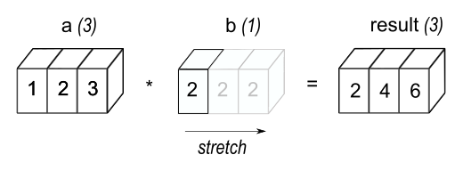
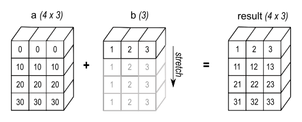
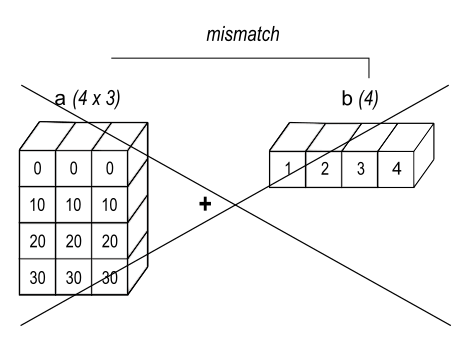
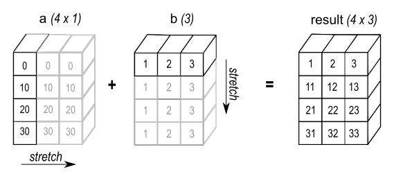
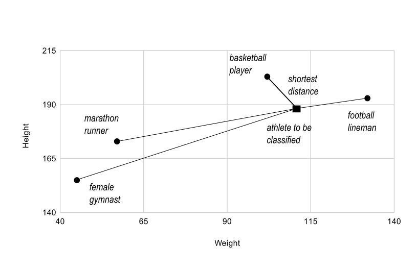

Трансляция массивов (broadcasting)#
См. также
Термин broadcasting, или трансляция массивов, описывает, как NumPy выполняет арифметические операции над массивами разной формы. При соблюдении определённых правил меньший массив мысленно «растягивается» до формы большего, чтобы их формы стали совместимыми. Трансляция позволяет векторизовать операции: циклы выполняются в коде на C, а не в Python. При этом лишние копии данных не создаются, что обычно делает алгоритм эффективным. Однако в некоторых задачах трансляция приводит к неэкономному расходованию памяти и замедляет вычисления.
Операции NumPy обычно выполняются поэлементно над парами массивов. В простейшем случае оба массива должны иметь одинаковую форму, как в следующем примере:
>>> import numpy as np
>>> a = np.array([1.0, 2.0, 3.0])
>>> b = np.array([2.0, 2.0, 2.0])
>>> a * b
array([2., 4., 6.])
Правила трансляции NumPy позволяют ослабить это требование, если формы массивов удовлетворяют определённым условиям. Простейший пример — операция над массивом и скаляром:
>>> import numpy as np
>>> a = np.array([1.0, 2.0, 3.0])
>>> b = 2.0
>>> a * b
array([2., 4., 6.])
Результат совпадает с предыдущим примером, где b был массивом. Можно представить, что скаляр b во время арифметической операции растягивается до массива той же формы, что и a. Новые элементы b, показанные на рисунке 1, в этой мысленной модели являются копиями исходного скаляра. Но «растягивание» — лишь способ объяснить операцию. NumPy использует исходное скалярное значение без фактического создания копий, чтобы экономить память и вычислительные ресурсы.

Подписи на рисунке: result — результат. Массив из одного элемента мысленно растягивается до трёх элементов.Рисунок 1#
В простейшем примере трансляции скаляр b мысленно растягивается до массива той же формы, что и a . Формы становятся совместимыми для поэлементного умножения.
Код второго примера эффективнее первого: при умножении требуется перемещать меньше данных в памяти, поскольку b — скаляр, а не массив.
Общие правила трансляции массивов#
При операции над двумя массивами NumPy попарно сравнивает размеры их измерений. Сравнение начинается с последнего, то есть крайнего правого измерения, и продолжается справа налево. Размеры двух соответствующих измерений совместимы, если
они равны или
один из них равен 1.
Если ни одно из этих условий не выполнено, возникает исключение ValueError: operands could not be broadcast together: оно означает, что формы массивов несовместимы.
Исходные массивы могут иметь разное число измерений. Число измерений результата равно наибольшему числу измерений среди исходных массивов. При этом размер каждого измерения результата равен наибольшему размеру соответствующего измерения исходных массивов. Отсутствующие измерения считаются имеющими размер 1.
Например, есть RGB-изображение — массив формы 256x256x3. Чтобы умножить каждый цветовой канал на свой коэффициент, достаточно умножить изображение на одномерный массив из трёх значений. Если сопоставить размеры осей справа налево по правилам трансляции, видно, что формы совместимы:
Image (3d array): 256 x 256 x 3
Scale (1d array): 3
Result (3d array): 256 x 256 x 3
Если один из двух сравниваемых размеров равен 1, в результате используется другой размер. Иными словами, измерение размера 1 мысленно «растягивается», или его значения «копируются», до второго размера.
В следующем примере и у A, и у B есть оси длины 1. При трансляции их длина мысленно увеличивается до соответствующего большего размера:
A (4d array): 8 x 1 x 6 x 1
B (3d array): 7 x 1 x 5
Result (4d array): 8 x 7 x 6 x 5
Массивы, совместимые для трансляции#
Набор массивов называют совместимым для трансляции к одной форме, если применение приведённых выше правил даёт допустимый результат.
Например, пусть a.shape равно (5,1), b.shape — (1,6), c.shape — (6,), а d.shape — (). Последнее означает, что d — скаляр. Тогда a, b, c и d совместимы для трансляции к форме (5,6). При этом:
a ведёт себя как массив формы (5,6), в котором столбец
a[:,0]повторяется в остальных столбцах;b ведёт себя как массив формы (5,6), в котором строка
b[0,:]повторяется в остальных строках;c ведёт себя как массив формы (1,6), а значит, и как массив формы (5,6), в котором
c[:]повторяется в каждой строке;d ведёт себя как массив формы (5,6), во всех элементах которого повторяется единственное скалярное значение.
Ещё несколько примеров:
A (2d array): 5 x 4
B (1d array): 1
Result (2d array): 5 x 4
A (2d array): 5 x 4
B (1d array): 4
Result (2d array): 5 x 4
A (3d array): 15 x 3 x 5
B (3d array): 15 x 1 x 5
Result (3d array): 15 x 3 x 5
A (3d array): 15 x 3 x 5
B (2d array): 3 x 5
Result (3d array): 15 x 3 x 5
A (3d array): 15 x 3 x 5
B (2d array): 3 x 1
Result (3d array): 15 x 3 x 5
Примеры форм, несовместимых для трансляции:
A (1d array): 3
B (1d array): 4 # trailing dimensions do not match
A (2d array): 2 x 1
B (3d array): 8 x 4 x 3 # second from last dimensions mismatched
Комментарии к примеру на русском
- Последние измерения не совпадают
- Предпоследние измерения не совпадают
Пример трансляции при сложении одномерного массива с двумерным:
>>> import numpy as np
>>> a = np.array([[ 0.0, 0.0, 0.0],
... [10.0, 10.0, 10.0],
... [20.0, 20.0, 20.0],
... [30.0, 30.0, 30.0]])
>>> b = np.array([1.0, 2.0, 3.0])
>>> a + b
array([[ 1., 2., 3.],
[11., 12., 13.],
[21., 22., 23.],
[31., 32., 33.]])
>>> b = np.array([1.0, 2.0, 3.0, 4.0])
>>> a + b
Traceback (most recent call last):
ValueError: operands could not be broadcast together with shapes (4,3) (4,)
На рисунке 2 массив b прибавляется к каждой строке a. В случае на рисунке 3 возникает исключение, поскольку формы несовместимы.

Подписи на рисунке: result — результат формы (4, 3). Вектор b прибавляется к каждой строке массива a.Рисунок 2#
При сложении одномерного и двумерного массивов трансляция возможна, если число элементов одномерного массива совпадает с числом столбцов двумерного.

Подписи на рисунке: mismatch — несовместимость форм: длины сравниваемых осей различаются, и ни одна из них не равна 1.Рисунок 3#
В этом примере размеры последних измерений различаются и ни один из них не равен 1. Поэтому трансляция невозможна: значения в строках первого массива нельзя сопоставить с элементами второго для поэлементного сложения.
С помощью трансляции удобно вычислять внешнее произведение двух массивов и выполнять другие внешние операции. Следующий пример показывает внешнее сложение двух одномерных массивов:
>>> import numpy as np
>>> a = np.array([0.0, 10.0, 20.0, 30.0])
>>> b = np.array([1.0, 2.0, 3.0])
>>> a[:, np.newaxis] + b
array([[ 1., 2., 3.],
[11., 12., 13.],
[21., 22., 23.],
[31., 32., 33.]])

Подписи на рисунке: stretch — мысленно растянуть; result — результат. Столбец a формы (4, 1) и вектор b формы (3,) дают результат формы (4, 3).Рисунок 4#
В некоторых случаях мысленно растягиваются оба массива. Тогда форма результата может быть больше формы каждого исходного массива.
Здесь индексный оператор newaxis добавляет новую ось в a, превращая его в двумерный массив формы 4x1. Операция над этим массивом формы 4x1 и массивом b формы (3,) даёт массив формы 4x3.
Практический пример: векторное квантование#
Трансляция часто встречается в практических задачах. Типичный пример — алгоритм векторного квантования (VQ), применяемый в теории информации, классификации и смежных областях. Его основная операция — поиск точки из заданного набора, ближайшей к исследуемой точке. В терминологии VQ точки набора называются кодовыми векторами (codes), а исследуемая точка — наблюдением (observation). В простом двумерном примере ниже значения observation описывают вес и рост спортсмена, которого нужно классифицировать. Точки codes представляют разные классы спортсменов. [1] Для поиска ближайшей точки вычисляют расстояние от наблюдения до каждого кодового вектора. Наименьшее расстояние соответствует наилучшему совпадению. Здесь ближайший класс — codes[0], поэтому спортсмен, скорее всего, баскетболист.
>>> from numpy import array, argmin, sqrt, sum
>>> observation = array([111.0, 188.0])
>>> codes = array([[102.0, 203.0],
... [132.0, 193.0],
... [45.0, 155.0],
... [57.0, 173.0]])
>>> diff = codes - observation # the broadcast happens here
>>> dist = sqrt(sum(diff**2,axis=-1))
>>> argmin(dist)
0
Комментарии к примеру на русском
- Здесь происходит трансляция массивов
В этом примере массив observation мысленно растягивается до формы массива codes:
Observation (1d array): 2
Codes (2d array): 4 x 2
Diff (2d array): 4 x 2

Подписи на рисунке: Height — рост; Weight — вес; marathon runner — марафонец; female gymnast — гимнастка; basketball player — баскетболист; football lineman — линейный игрок в американском футболе; athlete to be classified — спортсмен, которого нужно классифицировать; shortest distance — наименьшее расстояние.Рисунок 5#
Основная операция векторного квантования — вычисление расстояний от классифицируемого объекта, обозначенного тёмным квадратом, до известных кодовых векторов, обозначенных серыми кружками. В этом простом случае каждый кодовый вектор представляет отдельный класс. В более сложных задачах одному классу могут соответствовать несколько кодовых векторов.
Обычно множество observations, например загруженных из базы данных, сравнивают с набором codes. Рассмотрим такой случай:
Observation (2d array): 10 x 3
Codes (3d array): 5 x 1 x 3
Diff (3d array): 5 x 10 x 3
Трёхмерный массив diff появляется вследствие применения трансляции, но для самого вычисления он не обязателен. При большом наборе данных этот промежуточный массив тоже будет большим, что снижает эффективность вычислений. Если вместо этого обрабатывать наблюдения по одному в цикле Python, используя код из предыдущего двумерного примера, потребуется значительно меньший массив.
Трансляция — мощный инструмент для написания короткого и обычно понятного кода, который эффективно выполняет вычисления на C. Однако в некоторых алгоритмах она расходует неоправданно много памяти. Тогда внешний цикл алгоритма лучше написать на Python. Код при этом может стать понятнее: выражения с трансляцией обычно сложнее читать по мере увеличения числа измерений.
Сноски